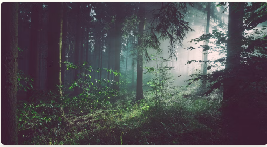

Forests are home to wildlife, greenery, and natural beauty. They play an important role in keeping the environment balanced.
Walking through forests gives a peaceful feeling, surrounded by trees, birds, and fresh air.
